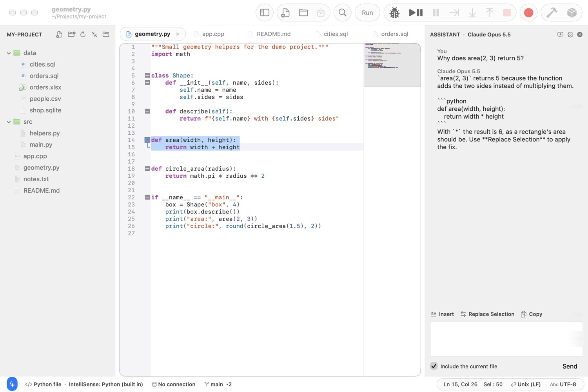

jplus2 press kit
Last updated:
Everything you need to write about jplus2, a native code editor for the Mac: verified facts, descriptions you can copy, the icon and screenshots in one download, and how to reach the developer.
Quick facts
| Name | jplus2 (always lowercase) |
|---|---|
| Developer | Jason Leiton, one developer |
| What it is | A native code editor for macOS (Cocoa), built on the Scintilla 5 editing component |
| Platforms | macOS 12 or later, Apple silicon and Intel. An iPadOS version is planned for the next release; details may change. |
| Editions | jplus2 Lite: free download, about 5.6 MB, version 1.0.2. jplus2 (full): available on the Mac App Store, $19.99. |
| Languages | Syntax colouring and code folding for 95 languages |
| Lite includes | Tabs and session restore, find and replace with regular expressions, macros, bookmarks, a file explorer, Go to Anything, a command palette, a minimap, and light and dark appearance |
| The full version adds | IntelliSense, compile and run, a Python debugger, SQL (Databricks, Snowflake, SQLite, Excel and CSV files), GitHub, an AI assistant with an Agent mode that proposes file changes and terminal commands for your approval (Claude with your own API key, OpenAI-compatible services or local models such as Ollama) and a built-in guide in English and Spanish |
| Privacy | No account and no analytics. Lite makes no network connections of its own. API keys are kept in the macOS Keychain. |
| Licence | Proprietary; Lite is free. Scintilla and Lexilla are © Neil Hodgson and used under their own licence. |
| Website | https://jplus2.com |
| Contact | leiton@live.com |
Descriptions you can copy
One line
jplus2 is a fast, native code editor for Mac, with a free Lite version.
Short (about 60 words)
jplus2 is a native code editor for macOS, built on Scintilla 5 for Apple silicon and Intel Macs. The free Lite version covers everyday editing in 95 languages, with no account and no telemetry. The full version, on the Mac App Store, adds run and debug, SQL on CSV and Excel files, GitHub and an AI assistant that uses your own API key or a local model.
Long (about 110 words)
jplus2 is a native code editor for macOS, written in Cocoa on top of the Scintilla 5 editing component and made by one developer, Jason Leiton. The free Lite version, a download of about 5.6 MB, gives syntax colouring and folding for 95 languages, tabs with session restore, find and replace with regular expressions, macros, bookmarks, a file explorer, Go to Anything, a command palette and a minimap, with no account and no telemetry. The full version, on the Mac App Store, adds IntelliSense, compile and run, a Python debugger, SQL on databases and on Excel or CSV files, GitHub integration and an AI assistant that works with your own Claude API key, an OpenAI-compatible service or a local model. An iPadOS version is planned.
Download the assets
Screenshots
Click a screenshot for the full-size light version (1500 px wide). Several show features of the full version, and all use a demo project.

Light JPG · Dark JPG


Light JPG · Dark JPG


Light JPG · Dark JPG


Light JPG · Dark JPG



Light JPG · Dark JPG


Light JPG · Dark JPG

Brand notes
- Write the name as jplus2, all lowercase, even at the start of a sentence. Call the free edition jplus2 Lite.
- Use the icon as supplied, without changing its colours, proportions or the J and 2.
- Please link to jplus2.com.
- Site colours: indigo
#4257f5, violet#6a3de8, coral#ef6f6c, text#1d1d1f.
Good to know before you write
- jplus2 is version 1.0 from a single developer, and it is closed source. There is no plugin system.
- The full version is on the Mac App Store; the free Lite version downloads from jplus2.com. The Mac App Store version does not offer the Azure SQL, SQL Server, Synapse, PostgreSQL, MySQL or MariaDB connections.
- Since version 1.0.2, the Lite download is signed with a Developer ID and notarized by Apple.
- Comparisons on this site cite each vendor's own pages and say when they were checked.
Contact
Questions, interviews and corrections are welcome. Write to leiton@live.com, in English or Spanish.